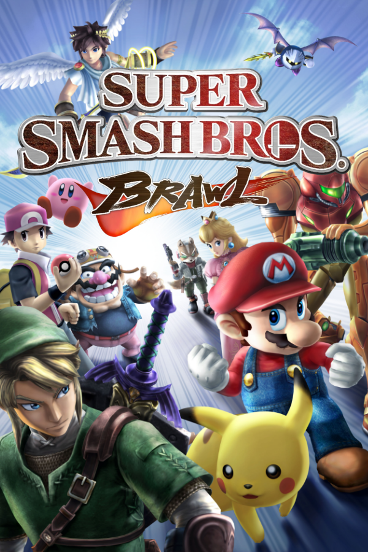

|  | |
| Playtime | Not Played |
| Last Activity | Never |
| Added | 4/29/2025 6:57:43 |
| Modified | 4/29/2025 23:24:47 |
| Completion Status | Not Played |
| Library | Playnite |
| Source | |
| Platform | Nintendo Wii |
| Release Date | 1/31/2008 |
| Community Score | 82 |
| Critic Score | 93 |
| User Score | |
| Genre | Fighting |
| Developer | Sora Ltd. |
| Publisher | Nintendo |
| Feature | Multiplayer Single Player |
| Links | Wikipedia "Official website" |
| Tag | [People] composer: Keigo Ozaki [People] composer: Kentaro Ishizaka [People] composer: Masaaki Iwasaki [People] composer: Nobuo Uematsu [People] composer: Shogo Sakai [People] composer: Takahiro Nishi [People] composer: Yutaka Iraha [People] director: Masahiro Sakurai [People] producer: Akiya Sakamoto [People] producer: Keisuke Terasaki [People] producer: Kensuke Tanabe [People] writer: Kazushige Nojima [People] writer: Masahiro Sakurai |
Super Smash Bros. Brawl is a 2008 crossover fighting game developed by Sora Ltd. and published by Nintendo for the Wii. The third installment in the Super Smash Bros. series and the successor to Super Smash Bros. Melee, it was the first game in the series not to be developed primarily by HAL Laboratory. It was developed by a creative team under Sora that included members from several Nintendo and third-party development teams. It was announced at a pre-E3 2005 press conference by Nintendo president Satoru Iwata. Masahiro Sakurai, director of the previous two games in the series, assumed the role of director at Iwata's request. Game development began in October 2005; after delays due to development problems, the game was released worldwide in 2008.
The number of playable characters in Brawl has grown from that in Super Smash Bros. Melee, although some characters from Melee were cut in the game. Brawl is the first game in the series to have playable third-party characters. Like that of its predecessors, the objective of Brawl is to knock opponents off the screen. It is a departure from traditional fighting games, notably in its simplified move commands and emphasis on ring outs over knockouts. It includes a more extensive single-player mode than its predecessors, known as "The Subspace Emissary". This mode is a plot-driven and side-scrolling beat 'em up featuring computer-generated cutscenes. Brawl supports multiplayer battles with up to four combatants and is the first game of its franchise to feature online battles via Nintendo Wi-Fi Connection. The game can be played with four different controllers, including the Wii Remote, Wii Remote with Nunchuk, GameCube controller and Classic Controller, simultaneously.
Super Smash Bros. Brawl received universal acclaim, with praise centered on its entertainment value despite issues relating to its content loading times. Its musical score, composed through a collaboration of 38 renowned video game composers, was lauded for its representation of different generations in gaming history. Brawl was named the "Fighting Game of the Year" by the Academy of Interactive Arts & Sciences. In 2010, the game was included as one of the titles in the book 1001 Video Games You Must Play Before You Die, and is also considered to be one of the best video games ever made. As of 2023, it is the eighth best-selling Wii game of all time, with over thirteen million copies sold worldwide. It was followed by Super Smash Bros. for Nintendo 3DS and Wii U in 2014.
Following its predecessors, Brawl is a platform fighter that uses a battle system unlike that of typical fighting games. Players can choose from a large selection of characters, each attempting to knock their opponents off the screen as they fight on various stages. The characters in Brawl include most of the same ones as the predecessors, such as Mario and Pikachu. Instead of using traditional health bars that start at a maximum value and lose value, Brawl characters start the game with 0%; the value rises as they take damage, to a maximum of 999%. As a character's percentage increases, the character flies further back when hit. When a character is knocked beyond a stage's boundary and disappears from the screen, the character loses either a life, a point, or coins, depending on the mode of play. Brawl includes a function which allows players to create profiles with personalized button configurations for each control method along with their chosen username.
The characters in Brawl fight using a variety of attacks, that give the player a wider selection than the predecessors. Players execute each move by pressing a button in conjunction with a tilt of the control stick or a press of the D-pad, depending on the mode of control. In addition to basic attacks, characters have access to more powerful moves, known as smash attacks. Each character has four unique moves, which often cause effects besides damage to an opponent. Brawl introduces character-specific super attacks, referred to as "Final Smashes". Significantly more powerful than regular attacks, these moves have a wide variety of effects that range from nearly unavoidable blasts to temporary transformations. Final Smash moves can be performed by destroying a Smash Ball: a colorful floating orb bearing the Smash Bros. logo.
Characters can use items ranging from projectiles to melee weapons; each has a different effect on the characters around it. Although many items have returned from previous Super Smash Bros. games, new ones have been introduced as well. Some returning items have changed appearance and function. Two varieties of items, Assist Trophies and Poké Balls, temporarily summon guest characters and Pokémon, respectively, that generally aid the summoner. They cannot be controlled by players and are usually invincible.
Brawl's stages are generally based on plot devices from the various game series of Super Smash Bros. Stages range from floating platforms to moving areas where the characters must stay within the field of play. Each stage has a boundary that cannot be passed, or the character will be "KO'd", thus losing a life or "point", depending on the mode of play.
Brawl contains 41 selectable stages, 29 of which are initially available. Many stages undergo elaborate changes while battles take place, such as a cycling day-to-night system or changing seasons. A stage, based on the Animal Crossing series, features a live events system in which special events may occur depending on the date and time. Environmental gameplay mechanics are featured in this installment, such as destructible terrain and the ability to float. Unlike its predecessors, Brawl includes stages based on third-party games such as the Metal Gear Solid-inspired Shadow Moses Island. The game also includes 10 stages taken from its predecessor, Super Smash Bros. Melee.
Brawl allows players to create their own stages in a mode called Stage Builder, the first in the series to implement this mode. Players can save their stages to an SD card or to the internal memory of the Wii console. Through Nintendo Wi-Fi Connection, players can submit their creations to their friends, or to Nintendo to receive a daily stage from the service.
In addition to the standard multiplayer mode, Brawl features other multiplayer modes and options in Group mode. Special Melee, from the previous game, returns as Special Brawl. In this mode, players are able to battle in matches using special rules for a greater level of customization. Whereas previously standard options such as "Giant Melee" or "Invisible Melee" were limited to one feature per match, players may now select multiple options for a single match. Another returning game type, Tourney mode (formerly Tournament mode), enables players to create an elimination-based tournament, where up to 32 players can play, with a large number of game-controlled or human-controlled opponents. A "Rotation" feature has been introduced in Brawl, which allows up to sixteen players to compete in sequence by switching out winners or losers after each round.
Like its predecessors, Super Smash Bros. Brawl includes various modes of play from the previous game designed for a single player. In Classic Mode, players fight individual characters in a selected order. Each match features an arena or opponent from a particular series, such as The Legend of Zelda or Pokémon. Several matches have a unique battle condition, such as a metal opponent, large opponent, or a two-on-two team battle. Similar to Classic mode are All Star Mode and Boss Battles, where the player has only one life to defeat all of the playable characters and bosses respectively.
Brawl features Events, matches with predetermined battle conditions such as defeating opponents within a time limit or reaching a specific goal. New to single-player mode, each of the 41 Events has three difficulty levels, with a distinct high score recorded for each. In addition to the normal set of 41 Events played with a single player, a smaller set of 21 two-player Events is included.
Stadium mode is a collection of objective-oriented minigames. Returning from the two previous games is the "Target Smash!" minigame, in which the player must break ten targets as quickly as possible. In the Home-Run Contest, the player must beat Sandbag to inflict as much damage as possible in 10 seconds, then strike it with a Home-Run Bat. Updated from Melee, all Stadium mode minigames feature cooperative or competitive multiplayer.
Brawl allows players to play against distant opponents via the Nintendo Wi-Fi Connection. Online multiplayer games can be played either with registered friends or with randomly selected participants. Additionally, players can converse with up to four phrases that are preset by the player, which appear as speech bubbles when activated. These names and phrases are not displayed in random-player matches. The Spectator mode allows players to watch matches being played between other players, and bet on the outcome using coins earned within the game. The winner of the match earns a jackpot of coins.
Snapshots may be taken during battles or in certain other modes, which can later be sent to friends or submitted to Nintendo. Video replay footage can be captured in specific game modes, including Brawl and Target Smash! modes, and sent to friends in the same manner. Snapshots, custom stages and replays can be submitted to Nintendo's "Smash Service" for a chance to get the content featured and updated on all Smash Service-enabled Wii consoles. Since Brawl's launch, the Smash Service has updated the game's Vault with one user submitted snapshot, custom stage and replay data chosen by Nintendo every day; each new update overwrites the previous. The user can choose to not receive updates from the service through the Nintendo Wi-Fi Connection options menu. After June 30, 2009, the Smash Service stopped accepting content from its users. After May 20, 2014, the Nintendo Wi-Fi service for Brawl was discontinued.
Returning from Melee are trophies, statues of video game characters and objects that give brief histories or descriptions of their subjects, such as Mario and Link, or other characters and items that appear in their respective series. A minigame, the Coin Launcher, replaces the lottery machine from Melee as the primary method of obtaining trophies. The Coin Launcher is a machine that uses coins as projectiles to shoot trophies and counter incoming dangers. Coins can also be used to bet on the victor of online battles via Spectator mode. Trophies unavailable in Coin Launcher mode are obtained by using an item called the Trophy Stand on weakened enemy characters and bosses within The Subspace Emissary. Trophies obtained in this manner may contain information on the backstory of the Subspace Emissary.
In addition to trophies, players can now collect stickers of video game artwork. Players can place stickers and trophies onto virtual backgrounds and take snapshots, which can be sent to other players via Nintendo Wi-Fi Connection. Stickers can be applied to characters to power up their abilities in the Subspace Emissary.
Other stickers or trophies which cannot be collected through the Coin Launcher minigame, Subspace Emissary, or Vs. matches can be unlocked from the Challenges menu, an interactive display which catalogs unlocked features and items in gridded windows. Once a window has been broken and its contents are unlocked, horizontally adjacent windows display the conditions necessary to unlock them.
Brawl contains demo versions of several Nintendo games, named "Masterpieces", which were originally released for older consoles and feature characters playable in Brawl. These games use Virtual Console technology to emulate older hardware and have time constraints ranging from thirty seconds to five minutes. Some use save data to allow the player to play a certain scenario or level. Along with Masterpieces comes the inclusion of the Chronicles section, a library of previous Nintendo games which lists games either previously made or published by Nintendo on all of its consoles. New games appear when certain characters, trophies or stickers related to the game are unlocked.
In the Adventure mode titled "The Subspace Emissary", Mario and Kirby face each other on a stadium located in the Super Smash Bros. universe. In this world, when a fighter is defeated, they become an inanimate trophy-like object, but they can be returned to their animate forms when the object's stand is touched by an active fighter. Suddenly, the Halberd appears, releasing a stream of purple snowflake-like particles known as Shadow Bugs that form the soldiers of an evil force known as the Subspace Army. The Ancient Minister, the army's cloaked general, arrives and detonates a Subspace Bomb, which can only be activated by the sacrifice of a pair of R.O.B. units, and transports the stadium into Subspace, an alternate dimension where the Subspace Army resides. The army's advance prompts the fighters to join forces and attempt to repel the threat, while its pawns, villain fighters Bowser and Wario, attempt to deter the allied fighters by using powerful raygun-like weapons that instantly reduce them to their trophy forms, with the former using the Shadow Bugs on some of them to create evil doppelgängers. King Dedede begins independently gathering some fallen fighters, placing golden brooches on them.
The Ancient Minister is revealed as a subordinate of Ganondorf, who is under orders from Master Hand to draw the world into Subspace, but is secretly plotting a coup d'état against him for command over the Subspace Army. Wario, who had kidnapped Ness, is defeated by Lucas, aided by the Pokémon Trainer, and his trophy form is later helplessly sucked into a Subspace Bomb's detonation. Meanwhile, Meta Knight leaves his group to reclaim the Halberd as he allies with Lucario and Snake and neutralizes the source of the Shadow Bugs – Mr. Game & Watch.
The Ancient Minister's true identity is revealed to be that of the leading R.O.B. unit, who rebels against Ganondorf to join the fighters when the latter detonates several bombs on its home, the Isle of the Ancients, to create a rift into Subspace large enough to summon the Subspace Army's ultimate weapon – an enormous warship. The three major groups converge and use the reclaimed Halberd to combat the ship. Although the Halberd is destroyed, the fighters escape unscathed and Ganondorf and Bowser retreat after Kirby destroys the ship with his Dragoon. After betraying Bowser and preparing to put his coup in motion, Ganondorf discovers that Master Hand was being controlled by the embodiment of Subspace and the mastermind behind the Subspace Army, Tabuu, who defeats Ganondorf and the freed Master Hand.
The fighters confront Tabuu, but the latter annihilates them all with a cataclysmic attack known as "Off Waves" and scatters their trophy forms all throughout his dimension. Dedede's brooches are soon revealed to be a fail-safe against Tabuu and independently revive Luigi, Ness and later Kirby, who, with the former two reviving Dedede in return, rescue the fighters and navigate a gargantuan maze-like amalgamation of the areas that were transported into Subspace where Tabuu is located. When Tabuu attempts to dispose of the fighters once and for all, he is attacked by Sonic, who negates his Off Waves; the fighters then defeat Tabuu, restoring all the areas consumed by Subspace.
In an epilogue, the fighters look at a great luminous cross on the horizon where the Isle of the Ancients once resided, now erased due to the excessive amount of the Subspace Bombs that had been detonated there.
Brawl allows the player to select from 39 playable characters, 25 of which are initially available from the start. Some are new, but others return from Melee—in some cases updated or refined, either in appearance, fighting capabilities, or both. For example, Link and Fox have adopted designs from more recent titles at the time, while Samus has gained the ability to change into Zero Suit Samus. Dr. Mario, Roy, Young Link, Mewtwo and Pichu are the first five characters to not return from a previous game.
Some previously represented series have had more characters added to Brawl. Diddy Kong from the Donkey Kong series, Ike from the Fire Emblem series, and Lucas from Mother 3 make their first appearance in the Smash Bros. series. Other newcomers are the first to represent their series. These include characters such as Pit, representing the Kid Icarus series for the first time since the 1991 Game Boy game Kid Icarus: Of Myths and Monsters, Olimar of the Pikmin series, and Wario, as he appears in Nintendo's WarioWare. Solid Snake, the protagonist of Konami's Metal Gear franchise, and Sonic the Hedgehog from Nintendo's former rival Sega are the first third-party characters to appear in a Super Smash Bros. game.
At a pre-E3 2005 press conference on May 17, 2005, Nintendo president Satoru Iwata announced that the next installment of Super Smash Bros. was soon to be in development for its next console and would be a launch title with Wi-Fi compatibility for online play. The announcement was a surprise to Sakurai, who left HAL Laboratory in 2003. He was not informed of Nintendo's intent to release another Smash Bros. game, despite the fact that Iwata told Sakurai shortly after his resignation from HAL that if a new Smash game were developed, he would want Sakurai to again serve as director. It was not until the day after the conference that Iwata requested that Sakurai hold a private meeting with him, where he was asked to be involved as Brawl's director. Sakurai agreed to become director, and development of the game began in October 2005, when Nintendo opened a new office in Tokyo just for its production. Help from a variety of studios such as original series developer HAL Laboratory, Monolith Soft and Paon was enlisted, with Game Arts as the main team in the preliminary development stages. In addition, several Smash Bros. staff members that resided in the area of the new office joined the project. Altogether, roughly 100 individuals worked on the project full-time, and were given access to all the original material and tools from the development of Melee, courtesy of HAL Laboratory.
The game was absent from Nintendo's Wii showing at its pre-E3 2006 press conference. Nintendo officially revealed the game under the name of Super Smash Bros. Brawl the next day, May 10, 2006, along with the game's first official trailer during the E3 After-Hours Press Conference. In an interview with IGN, Sakurai said the Wii's motion sensing features might not be included because "[his team] found that trying to implement too much motion-sensory functionality can get in the way of the game". As far as Wi-Fi play is concerned, Sakurai stated his plan was to include Wi-Fi connection compatibility from the start. He goes on to say, "One of the primary reasons Super Smash Bros. Brawl was created was that Nintendo, when taking Wii online, wanted to have Smash Bros. to do that." However, Sakurai stated on the Japanese version of the Smash Bros. website that there were "hurdles of all sorts that [made] it very difficult" to implement online battles. Furthermore, he said that an online ranking system is unlikely to be implemented. During a test play between Sakurai and Hideo Kojima, Kojima stated that the game felt complete and that Nintendo "could put it out now and it would sell millions of copies". Starting May 22, 2007 and ending April 14, 2008, the game's official site had daily weekday updates, revealing characters, stages, items, music and more.
At the Nintendo Media Conference at E3 2007, Nintendo of America president Reggie Fils-Aimé announced that Super Smash Bros. Brawl would be released on December 3, 2007, in the Americas. However, just two months before its anticipated December release, the development team asked for more time to work on the game. During the Nintendo Conference on October 10, 2007, President Iwata announced the delay,
On October 11, 2007, George Harrison of Nintendo of America stated that Super Smash Bros. Brawl would be released on February 10, 2008, in North America. On January 15, 2008, the game's release was delayed one week in Japan to January 31 and nearly a month in the Americas to March 9. On April 24, 2008, Nintendo of Europe confirmed that Brawl would be released in Europe on June 27. Similarly, Nintendo Australia announced on May 15, 2008, that the game would be released in that region on June 26, 2008.
Super Smash Bros. Brawl uses a dual-layer disc due to the size of the game data. Nintendo of America has stated that some Wii consoles may have difficulty reading the high-density software due to a contaminated laser lens. Nintendo offered a free repair for owners who experienced this issue.
Sakurai revealed a list of 36 musicians providing musical arrangements for the game on May 22, 2007. He asked composers such as Koji Kondo, Yasunori Mitsuda, Yoko Shimomura, and Yuzo Koshiro, amongst many others, to listen to a selection of Nintendo and other game music and arrange their favorites. The game's various stages have multiple musical tracks which players can listen to using the new "My Music" feature, including some pieces taken directly from other games without any modification or special arrangements. This feature allows the player to select how often a piece gets played during a stage. Some of the pieces need to be unlocked by collecting CDs which are awarded via the game's Challenges Mode, or by spawning randomly while playing. The game's original music was composed by Takahiro Nishi, Shogo Sakai, Masaaki Iwasaki, Yutaka Iraha, Keigo Ozaki, and Kentaro Ishizaka, while the main theme was composed by former Final Fantasy series composer, Nobuo Uematsu, and arranged by Sakai. The main theme has Latin lyrics that allude to various key aspects of the game, including fighting for glory, rivals becoming companions, and the fame of the characters.
Sakurai originally stated that he did not want to emphasize Japan-only characters. However, reflecting upon Marth and Roy's inclusion in Melee, which led to the international release of the Fire Emblem series, he became more interested in characters exclusive to Japan-only releases. Sakurai said that third-party characters would amount to two at the most, aside from Snake. The inclusion of Konami-created character Solid Snake may seem to conflict with the Super Smash Bros. paradigm—to only include characters from games made by Nintendo and its second parties—but Sakurai said that the creator of Metal Gear Hideo Kojima "practically begged" him to include Solid Snake in Melee, which was not feasible as development was too far in for the game. This in turn led to his appearance in the following game instead. Additionally, Lucas from Mother 3 was supposed to be added in Melee, but was excluded due to the constant delay and ultimate cancellation of Mother 3 of the Nintendo 64.
Japanese fans were asked to submit their desired characters and musical themes via a forum on the game's official Japanese site for possible inclusion. The most requested third-party character, Sega's Sonic the Hedgehog, was announced to be in Brawl on October 10, 2007. Sonic series co-creator Yuji Naka asked for Sonic to be included in Melee, but Sonic could not be implemented because of time constraints.
During Brawl's development, Sakurai revealed that he initially considered adding Miis as playable fighters. However, due to concerns that the Miis would not be interesting enough characters and that they could be used for online bullying, Sakurai had to decide against it. Miis would later be integrated into the series as playable characters in Super Smash Bros. for Nintendo 3DS and Wii U.
Super Smash Bros. Brawl has received universal acclaim and has been commercially successful worldwide. In the United States, the game sold 874,000 units on launch day and 1.4 million units in its first week to become the fastest-selling Nintendo video game in America's history, according to Nintendo. According to the NPD Group, it was the best-selling game of March 2008 in Canada and the United States, selling 200,000 and 2.7 million units, respectively; it was the best-selling game of 2008 in Canada. The game generated $122 million in revenue in March 2008. Electronic Entertainment Design and Research analyst, Jesse Divnich, attributed the game's strong US sales to its fulfilling "the needs of the casual, social, and sub-13-year-old markets". Upon release in PAL regions, Brawl reached number one on both European and Australian sales charts. According to the NPD Group, GfK Chart-Track, and Enterbrain, by August 2008, the game had sold 3.539 million units in the United States, 213,000 in the United Kingdom, and 1.681 million in Japan, respectively, for a total of 5.433 million units. It ultimately received a "Platinum" sales award from the Entertainment and Leisure Software Publishers Association (ELSPA), indicating sales of at least 300,000 copies in the United Kingdom. It was also the fifth best-selling game of Japan in 2008, selling 1,747,113 copies. It was the fourth best-selling game of 2008 in the United States, selling over 4.17 million copies. By March 31, 2020, the game had sold 13.32 million units worldwide, according to Nintendo.
The editors of Japanese game magazine Famitsu, who awarded it a perfect score, praised the variety and depth of the single-player content, the unpredictability of Final Smashes, and the dynamic fighting styles of the characters. Chris Slate of Nintendo Power awarded Brawl a perfect score in the March 2008 issue, calling it "one of the very best games that Nintendo has ever produced". GameSpot editor Lark Anderson noted that Brawl's "simple controls and gameplay make it remarkably accessible to beginners, yet still appealing to veterans", while GameTrailers mentioned the amount of content that gives the game "staying power that few other games possess". Eurogamer praised the game's ability to stay fun in both single-player and multiplayer modes, while "fulfilling its usual role of dominating a willing crowd's evening into the early hours, and now allowing you to sustain that after everyone's gone home". Game Revolution hailed Brawl's soundtrack as "spectacular ... spanning a generous swath of gaming history". Game Informer highlighted Brawl's "finely tuned balance, core fighting mechanics, and local multiplayer modes". Edge concluded that, while the Smash Bros. games have often been "derided as button-mashing", Brawl features "one of the most enduringly innovative and deep systems of any fighter".
IGN editor Matt Casamassina, however, noted that, although Brawl is "completely engrossing and wholly entertaining", it suffers from "long loading times" and "uninspired enemies and locales" in the Subspace Emissary adventure mode. He also described the graphics as "an enhanced version of Melee", with backgrounds that lack detail in areas. GameSpy echoed this by equating the quality of the graphics to that of the GameCube. Mitchell Saltzman of Gameworld Network expressed disappointment at the lack of "stat tracking, voice chat, and a mostly lag free environment" in the online mode. NGamer's Matthew Castle points to the franchise's lack of innovation with the verdict, "Smash Bros risks growing too familiar. It never breeds contempt, but it doesn't quite muster that Galaxy magic." Jeff Gerstmann rated the game 4 out of 5 stars on Giant Bomb, saying that players who are not into Nintendo's history or multiplayer "probably won't understand what all the fuss is about in the first place". 1UP.com, however, suggested that Brawl is not directed exclusively towards serious gamers, as it offers "a curious diversion for uninterested gamers" as well.
Super Smash Bros. Brawl won multiple Wii-specific awards in IGN's 2008 video game awards, including "Best Fighting Game", "Best Local Multiplayer Game" and "Best Original Score". It was also nominated by them for several other Wii-specific awards, including "Best Graphics Technology", "Best Use of Sound", "Best Online Multiplayer Game" and "Game of the Year". The game also won "Best Fighting Game" in GameSpot's Game of the Year awards 2008. During the 12th Annual Interactive Achievement Awards, the Academy of Interactive Arts & Sciences awarded Super Smash Bros. Brawl with "Fighting Game of the Year". The game placed 15th in Official Nintendo Magazine's 100 greatest Nintendo games of all time.
Brawl was ranked by Nintendo Power as the fifth best game of the 2000s released on a Nintendo system.
Brawl is unusually moddable for a console game, due to the "Smash Stack" exploit found within the game's built-in stage builder when loading stages from an SD card. Rather than stage data, a specialized program can be inserted onto the SD card that renders the builder unusable while present, but allows loading of fan-made patches from the card on top of the game's on-disc data. These patches range from simple character skins and balance adjustments to more complex modifications such as whole additional characters and extra stages more complex than the internal stage builder allows.
In 2011, a team of competitive Super Smash Bros. players, known collectively as the Project M Back Room (PMBR), began development on a mod of Brawl titled Project M. The project was designed to retool Brawl to play more like its predecessor, Super Smash Bros. Melee, in response to complaints about Brawl's physics, slower-paced gameplay, use of chance elements, and mechanics of certain attacks compared to Melee. The mod rebalances each of Brawl's playable characters, adds new character costumes and gameplay modes, and adds the characters Mewtwo and Roy, who were present in Melee but omitted from Brawl's roster. The mod received praise from many reviewers and fans, and the "Version 3.0" demo had received over 300,000 downloads by February 2014. The project ceased development on December 1, 2015.
In 2019, a new team of developers created Project+, described as a "spiritual successor" to Project M.